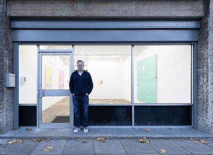

Jens Fröberg, born 1983 in Malmö, Sweden, graduated from the Academy of Fine Arts Vienna in 2017.
He has had solo exhibitions at Konstnärshuset in Stockholm (2021), Galleri Rostrum in Malmö (2019) and Xhibit in Vienna (2017). Fröberg lives and works in Malmö and Vienna.